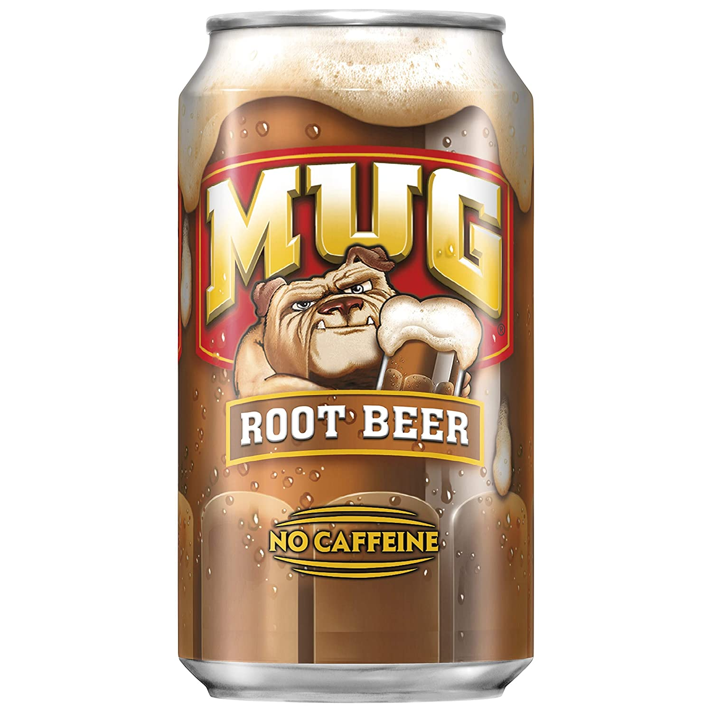

Temperatures reach record highs as the summer sun beats down on passerbys thought the city. Edawrd, a broke college student sits idly
in the shade of a nearby convienence store doing his utmost best to stay cool. Unfortunately, since Edward is so broke, he can't afford
working air conditioning at his old run down appartment, so he wonders the city trying to find anything that can keep him cool. While
he would settle for some water or anything cold, what he truly desires is the ice-cold taste of Mug root beer.

But in a country run by
Coca Cola, Pepsico products have been outlawed. Anyone seen with such products have mysteriously disapeared. Edward knows this since some
of his friends have disappeared after being too careless with their favorite Pepsico drinks. In this Coca Cola dystopia, Edward sets out to find his drink.